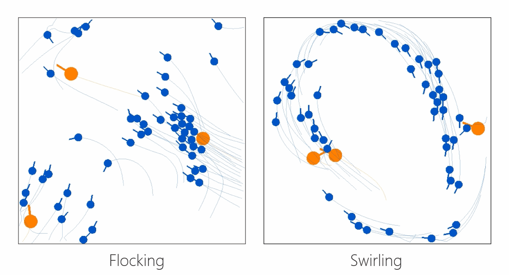

π.works
Greetings, and thank you for visiting this blog. My name is Jianan Li, and I'm a PhD student focusing on (aerial) robotics and (multi-agent) reinforcement learning at Westlake University. This platform serves to share the progress and insights of my research . As I approach the end of my doctoral studies, I am currently enthusiastic to explore career opportunities.
Featured Research I - Target Pursuit

This GIF shows an experimental flight scenario in which the pursuer aerial vehicle employs the proposed uniform bearing-only pseudo linear Kalman filter to estimate the target's state, while simultaneously utilizing helical navigation guidance to track the target.
PDF | Youtube | Bilibili | Very useful Kalman filter
@article{li2022three,
title={Three-Dimensional Bearing-Only Target Following via Observability-Enhanced Helical Guidance},
author={Li, Jianan and Ning, Zian and He, Shaoming and Lee, Chang-Hun and Zhao, Shiyu},
journal={IEEE Transactions on Robotics},
volume={39},
number={2},
pages={1509--1526},
year={2022},
publisher={IEEE}
}
Featured Research II - Predator-Prey Swarming

This research project explores the interesting topic of why and how do animals form swarming behaviors. The GIF shows our findings that how simple predator-prey survival pressure (prey receive a reward of -1 if caught by predators while predators receive a reward of +1 ) is sufficient to evolve various swarming behaviors. The Video abstract on Bilibili hit 10,000 views within 3 days (B站点击量3天破万). The paper is also selected by the Journal as one of the "Top Ten Most Read Papers”.
PDF-official | PDF-two-column version in arXiv | Youtube | Bilibili
@article{li2023predator,
title={Predator-prey survival pressure is sufficient to evolve swarming behaviors},
author={Li, Jianan and Li, Liang and Zhao, Shiyu},
journal={New Journal of Physics},
volume={25},
number={9},
pages={092001},
year={2023},
publisher={IOP Publishing}
}